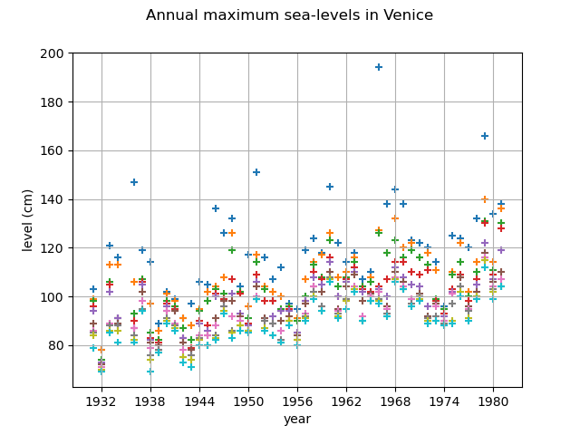
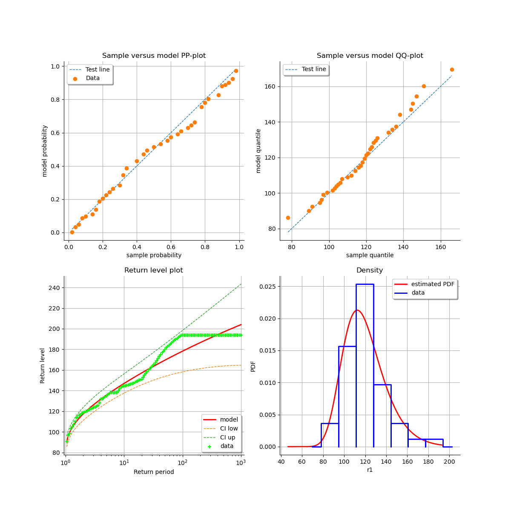
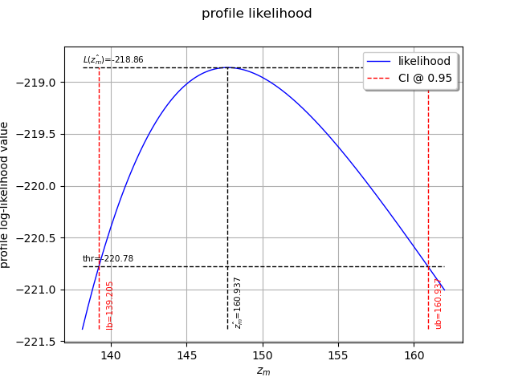

Note
Go to the end to download the full example code
Estimate a GEV on the Venice sea levels data¶
In this example we are going to estimate the parameters of a generalized extreme value distribution on the Venice sea levels data from [coles2001] with different methods:
the maximum likelihood estimation
the profile likelihood estimation
the estimation of return level from both maximum likelihood and profile likelihood
the R maxima estimator (see [coles2001] paragraph 3.5.3)
Load the Venice dataset of 10 highest sea levels per year
import openturns as ot
import openturns.viewer as otv
import openturns.experimental as otexp
from openturns.usecases import coles
data = coles.Coles().venice
print(data[:5])
[ Year r1 r2 r3 r4 r5 r6 r7 r8 r9 r10 ]
0 : [ 1931 103 99 98 96 94 89 86 85 84 79 ]
1 : [ 1932 78 78 74 73 73 72 71 70 70 69 ]
2 : [ 1933 121 113 106 105 102 89 89 88 86 85 ]
3 : [ 1934 116 113 91 91 91 89 88 88 86 81 ]
4 : [ 1936 147 106 93 90 87 87 87 84 82 81 ]
Plot the 10 largest sea levels per year
graph = ot.Graph("Venice sea level", "year", "Sea level (cm)", True, "")
for r in range(10):
cloud = ot.Cloud(data[:, [0, 1 + r]])
graph.add(cloud)
graph.setIntegerXTick(True)
view = otv.View(graph)

First work on the first column after the year column to retain only one max value per year
sample = data[:, 1]
Estimate the parameters of the GEV by maximizing the log-likehood and compute the parameter distribution
factory = ot.GeneralizedExtremeValueFactory()
result1 = factory.buildMethodOfLikelihoodMaximizationEstimator(sample)
Print the estimated parameter values
estimate = result1.getDistribution()
desc = estimate.getParameterDescription()
p = estimate.getParameter()
print(", ".join([f"{param}: {value:.3f}" for param, value in zip(desc, p)]))
mu: 111.088, sigma: 17.338, xi: -0.077
Inspect the estimated Gaussian parameter distribution
parameterEstimate = result1.getParameterDistribution()
print(parameterEstimate)
Normal(mu = [111.088,17.3382,-0.0769988], sigma = [2.90896,1.79594,0.0793248], R = [[ 1 0.450296 -0.488199 ]
[ 0.450296 1 -0.438803 ]
[ -0.488199 -0.438803 1 ]])
Inspect the covariance matrix
V = parameterEstimate.getCovariance()
print(V)
[[ 8.46207 2.35249 -0.112653 ]
[ 2.35249 3.22539 -0.0625129 ]
[ -0.112653 -0.0625129 0.00629243 ]]
Inspect the standard deviation
stddev = parameterEstimate.getStandardDeviation()
print(stddev)
[2.90896,1.79594,0.0793248]
Extract parameters confidence intervals
for i in range(3):
ci = parameterEstimate.getMarginal(i).computeBilateralConfidenceInterval(0.95)
print(desc[i] + ":", ci)
mu: [105.387, 116.789]
sigma: [13.8182, 20.8582]
xi: [-0.232473, 0.078475]
Validate the inference result thanks to some diagnostic plots
validation = otexp.GeneralizedExtremeValueValidation(result1, sample)
graph = validation.drawDiagnosticPlot()
view = otv.View(graph)

Now estimate the parameters with the profile likelihood
result2 = factory.buildMethodOfProfileLikelihoodMaximizationEstimator(sample)
We can see the confidence interval of ![\xi]() is a bit smaller with this method
is a bit smaller with this method
result2.setConfidenceLevel(0.95)
print(result2.getParameterConfidenceInterval())
[-0.200118, 0.101776]
We can also plot the profile likelihood and the confidence interval
view = otv.View(result2.drawProfileLikelihoodFunction())
Estimate the 10 and 100 years return levels from the MLE estimator
zm10 = factory.buildReturnLevelEstimator(result1, 10.0)
return_level10 = zm10.getMean()
print(f"10 years return level={return_level10}")
return_level_ci10 = zm10.computeBilateralConfidenceInterval(0.95)
print(f"CI={return_level_ci10}")
zm100 = factory.buildReturnLevelEstimator(result1, 100.0)
return_level100 = zm100.getMean()
print(f"100 years return level={return_level100}")
return_level_ci100 = zm100.computeBilateralConfidenceInterval(0.95)
print(f"CI={return_level_ci100}")
10 years return level=[146.912]
CI=[137.581, 156.243]
100 years return level=[178.251]
CI=[158.175, 198.326]
Now estimate the 10 years return level with profile likelihood
result_rl10_prof = factory.buildReturnLevelProfileLikelihoodEstimator(sample, 10.0)
zm = result_rl10_prof.getParameter()
print(f"10 years return level (profile)={zm}")
10 years return level (profile)=147.69168889379483
We can see the confidence interval of ![z_m]() is a bit smaller with this method
is a bit smaller with this method
result_rl10_prof.setConfidenceLevel(0.95)
return_level_ci10 = result_rl10_prof.getParameterConfidenceInterval()
print(f"CI={return_level_ci10}")
CI=[139.205, 160.937]
We can also plot the profile likelihood and the confidence interval
view = otv.View(result_rl10_prof.drawProfileLikelihoodFunction())

Now drop the year column to keep only the maxima values
sample_rmax = data[:, 1:]
print(sample_rmax[:5])
[ r1 r2 r3 r4 r5 r6 r7 r8 r9 r10 ]
0 : [ 103 99 98 96 94 89 86 85 84 79 ]
1 : [ 78 78 74 73 73 72 71 70 70 69 ]
2 : [ 121 113 106 105 102 89 89 88 86 85 ]
3 : [ 116 113 91 91 91 89 88 88 86 81 ]
4 : [ 147 106 93 90 87 87 87 84 82 81 ]
Estimate the parameters of the GEV from the r largest observations for different values of r
factory = ot.GeneralizedExtremeValueFactory()
r_candidate = [1, 5, 10]
for r in r_candidate:
estimate = factory.buildRMaxima(sample_rmax, r)
desc = estimate.getParameterDescription()
p = estimate.getParameter()
pretty_p = ", ".join([f"{param}: {value:.3f}" for param, value in zip(desc, p)])
print(f"r={r:2} {pretty_p}")
r= 1 mu: 111.099, sigma: 17.346, xi: -0.077
r= 5 mu: 118.702, sigma: 13.713, xi: -0.088
r=10 mu: 120.707, sigma: 12.815, xi: -0.113
It is possible to retrieve the value of r which maximizes the likelihood
best_r, llh = factory.buildBestRMaxima(sample_rmax, r_candidate)
print(best_r)
1
We can also get the associated likelihood value
for i in range(3):
print(f"r={r_candidate[i]} likelihood={llh[i]}")
r=1 likelihood=-218.85953117058833
r=5 likelihood=-717.7749932611638
r=10 likelihood=-1123.056052590468
We can also get the associated parameter distribution
result5 = factory.buildRMaximaEstimator(sample_rmax, 1)
print(result5.getParameterDistribution())
Normal(mu = [111.099,17.3458,-0.0771419], sigma = [0.763625,0.769499,0.0384669], R = [[ 1 0.662866 0.143128 ]
[ 0.662866 1 0.763213 ]
[ 0.143128 0.763213 1 ]])
otv.View.ShowAll()
Total running time of the script: ( 0 minutes 5.210 seconds)